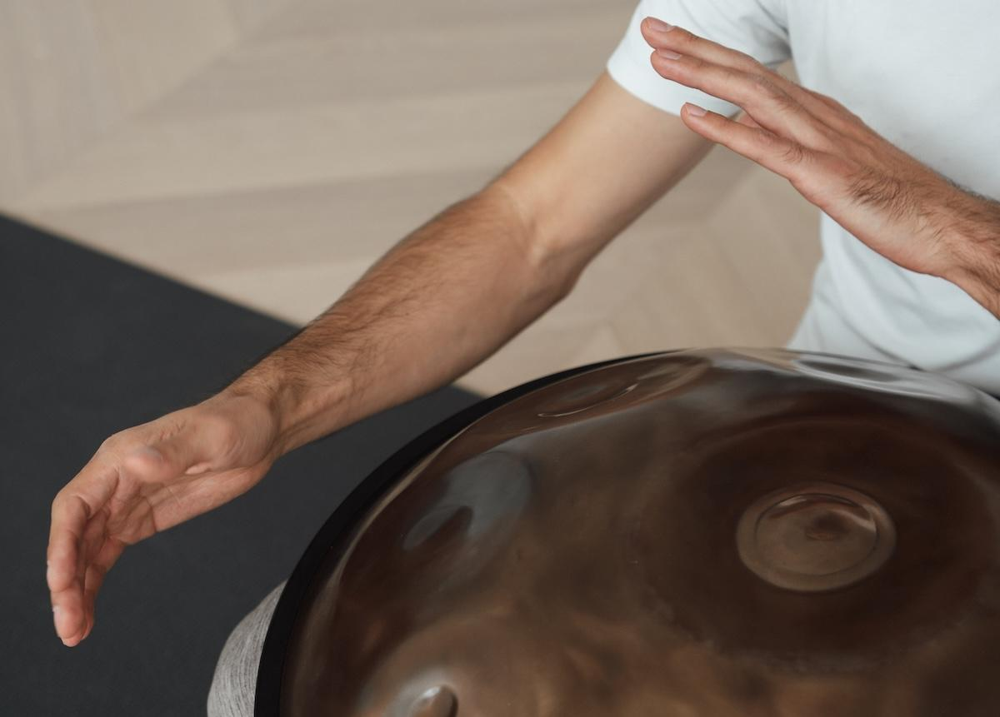

Gewinn: 1x den Onlinekurs The Art of Jamming von der Malte Marten Method im Wert von 149 Euro.
Gewinnspiel vom August 2025 – Instagram-Beitrag
So nimmst du teil:
Teilnahmeschluss: 17.08.2025 um 23:59 Uhr
Gewinner:in:
Die Gewinner:in wird am Mo, 18.08.2025 per Instagram-DM benachrichtigt.
Extra für alle Teilnehmer:
Wenn du an dem Gewinnspiel teilnimmst und alle drei Schritte erfüllst, erhältst du als Dankeschön für deinen Support ...
Diese Rabatte sind kein Trostpreis, sondern ein echtes Dankeschön für deine Teilnahme.
Malte Marten und Konstantin Rössler haben mit The Art of Jamming einen Onlinekurs geschaffen, der dich Schritt für Schritt in deinen eigenen Flow und in das Spielen zu zweit führt. Ganz ohne Noten oder Druck – dafür mit spielerischer Freude, Struktur und Tiefe.
Du lernst in deinem eigenen Tempo, entwickelst dein Rhythmusgefühl weiter und erforschst kreative Spielmuster, mit denen du aus dem Moment heraus Musik entstehen lässt. Ideal für alle, die bereits ein wenig spielen oder ihre musikalische Ausdruckskraft vertiefen möchten.
Mehr zum Kurs erfährst du auf: www.maltemartenmethod.com/the-art-of-jamming
In 2025 gibt es folgende Möglichkeiten Handpan mit Lukas spielen zu lernen:
Die Handpan-Anfänger-Workshops finden statt am:
Und die Handpan-Aufbaukurse finden statt am:
Such dir deinen Wunschtermin aus und sei dabei!
